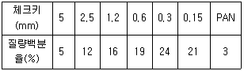
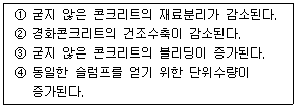
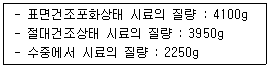
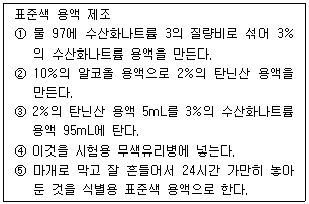
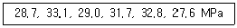
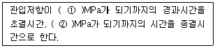
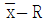
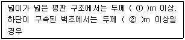
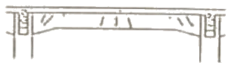
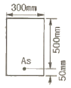

콘크리트산업기사 (2010-07-25 기출문제)
1과목: 콘크리트재료 및 배합
1. 콘크리트용 골재의 물리적 성질에 대한 기준으로 틀린 것은?
- 잔골재의 절대건조 밀도는 2.50g/cm2 이상이어야 한다.
- 굵은 골재의 절대건조 밀도는 2.50g/cm2 이상이어야 한다.
- 굵은 골재의 마모율은 30% 이하이어야 한다.
- 잔골재의 흡수율은 3.0% 이하이어야 한다.
(정답률: 60%)

2. 콘크리트용 고로슬래그 미분말의 품질을 평가하기 위한 시험으로 적합하지 않은 것은?
- 밀도
- 비표면적(블레인)
- 활성도지수
- 전알칼리량
(정답률: 74%)
3. 단위수량 175kg, 단위 잔골재량 750kg 및 단위 굵은골재량이 900kg의 콘크리트에서 잔골재 및 굵은골재의 표면수가 각각 4% 및 1%이면 보정된 단위수량은?
- 214kg
- 166kg
- 145kg
- 136kg
(정답률: 알수없음)
4. 배합수에 대한 설명 중 옳지 않은 것은?
- 배합수는 콘크리트 용적의 약 15% 정도를 차지한다.
- 배합수는 콘크리트에 소요되는 유동성과 시멘트 수화반응에 관여한다.
- 배합수의 수질에 의심이 가는 경우에는 화학분석이나 모르타르의 시험을 실시할 필요가 있다.
- 레미콘의 슬러지수는 높은 알칼리성으로 인하여 어떠한 조작을 거치더라도 배합수로 사용이 불가능하다.
(정답률: 알수없음)
5. 잔골재 체가름 시험결과 각 체에 남은 질량백분율이 다음 표와 같을 때 이 잔골재의 조립률(F.M)은?

- 2.43
- 2.57
- 2.65
- 2.80
(정답률: 60%)
6. 잔골재 표건밀도 2.60g/cm3, 굵은골재 표건밀도 2.65g/cm3 인 재료를 이용하여 잔골재율 40%인 콘크리트의 배합설계를 할 때 잔골재량이 624kg/m3 인 경우의 굵은골재량을 구하면?
- 954kg/m3
- 1017kg/m3
- 1087kg/m3
- 1128kg/m3
(정답률: 62%)
7. 풍화된 시멘트의 특성에 대한 설명으로 틀린 것은?
- 감열감량이 증가된다.
- 밀도가 증가된다.
- 응결이 지연된다.
- 강도발현이 저하된다.
(정답률: 77%)
8. 상수돗물 이외의 물을 혼합수로 사용할 경우에 대한 물의 품질 기준을 나타낸 것으로 틀린 것은?
- 현탁 물질의 양 : 2g/L 이하
- 용해성 증발 잔류물의 양 : 5g/L 이하
- 염소(Cl-)이온량 : 250mg/L 이하
- 모르타르의 압축 강도비 : 재령 7일 및 재령 28일에서 90% 이상
(정답률: 29%)
9. 콘크리트 배합에 관한 일반적인 설명으로 잘못된 것은?
- 콘크리트의 운반시간이 길거나 기온이 높을 때에는 슬럼프가 크게 저하하므로, 배합은 운반중의 슬럼프 저하를 고려한 슬럼프값으로 정해야 한다.
- 고강도콘크리트의 배합은 기상변화가 심하거나 동결융해에 대한 대책이 필요한 경우를 제외하고는 AE제를 사용하지 않는 것을 원칙으로 한다.
- 공사 중에 잔골재의 조립률이 ± 0.2 이상 차이가 있을 경우에는 콘크리트의 워커빌리티가 변하므로 배합을 수정할 필요가 있다.
- 굵은골재 최대치수는 철근의 최소 순간격의 3/4 이하이어야 하며, 콘크리트를 경제적으로 만들기 위해서는 최대치수가 작은 굵은골재를 사용하는 것이 유리하다.
(정답률: 62%)
10. 콘크리트 설계 기준강도가 24MPa, 50회의 실험 실적으로부터 구한 압축강도의 표준편차가 5MPa 이라면, 콘크리트의 배합강도는?
- 29.0MPa
- 30.5MPa
- 32.2MPa
- 33.9MPa
(정답률: 알수없음)
11. 시멘트의 비중에 관한 내용으로 틀린 것은?
- 시멘트의 비중은 시멘트의 종류마다 다르므로 비중시험 값으로 시멘트의 종류를 추정할 수 있다.
- 비중시험 값으로 시멘트의 풍화정도에 대한 기초자료, 소성정도 및 혼합물의 유무를 판정할 수 있다.
- 시험에 의하면 보통포틀랜드 시멘트의 비중 값은 3.50전 후이며, 보통 3.45 ~ 3.65 정도이다.
- 시멘트의 비중시험 기구로는 르샤틀리에 플라스크를 사용하며, 광유와 함온수조 등이 이용된다.
(정답률: 알수없음)
12. 배합강도를 결정할 때 콘크리트 압축강도의 표준편차는 실제 사용한 콘크리트의 30회 이상의 시험실적으로부터 결정하는 것을 원칙으로 하나, 시험횟수가 30회 미만인 경우 그 시험으로부터 구한 표준편차와 표준편차의 보정계수를 곱한 값을 표준편차로 사용한다. 다음의 시험횟수에 대한 표준편차의 보정계수가 옳지 않은 것은?
- 시험 횟수 : 30회이상 - 표준편차의 보정계수 : 1.00
- 시험 횟수 : 25회 - 표준편차의 보정계수 : 1.03
- 시험 횟수 : 20회 - 표준편차의 보정계수 : 1.10
- 시험 횟수 : 15회 - 표준편차의 보정계수 : 1.16
(정답률: 64%)
13. 최대 치수가 25mm인 굵은 골재로 체가름시험을 실시하려고 한다. 이 때 필요한 시료의 최소 건조 질량으로 옳은 것은?
- 500g
- 1kg
- 2.5kg
- 5kg
(정답률: 73%)
14. 일반콘크리트의 배합에서 물-결합재비에 대한 내용 설명으로 틀린 것은?
- 물-결합재비는 소요의 강도, 내구성, 수밀성 및 균열저항성 등을 고려하여 정한다.
- 콘크리트의 압축강도를 기준으로 물-결합재비를 정하는 경우, 압축강도의 물-결합재비와의 관계는 시험에 의하여 정하는 것을 원칙으로 하며, 이 때 공시체는 재령 28일을 표준으로 한다.
- 콘크리트의 탄산화 저항성을 고려하여야 하는 경우 물-결합재비는 55% 이하로 하여야 한다.
- 콘크리트의 수밀성을 기준으로 물-결합재비를 정할 경우, 그 값은 60% 이하로 하여야 한다.
(정답률: 100%)
15. 아래의 표에서 실리카 폼을 사용한 콘크리트의 일반적 특성을 옳게 설명한 것을 모두 고르면?

- ①, ③
- ①, ④
- ②, ③
- ②, ④
(정답률: 알수없음)
16. 굵은 골재에 관한 시험을 통해 아래 표와 같은 결과를 얻었다. 이 골재의 흡수율은?

- 3.48%
- 3.52%
- 3.80%
- 3.91%
(정답률: 84%)
17. 다음 중 시멘트 클링커 화합물읠 조성광물로 틀린 것은?
- 규산석회(CaO ㆍ SiO2)
- 규신 2석회(2CaO ㆍ SiO2)
- 알루민산 3석회(3CaO ㆍ Al2O3)
- 알루민철산 4석회(4CaO ㆍ Al2O3 ㆍ Fe2O3)
(정답률: 55%)
18. 시멘트 비중시험에서 시멘트 64.1g으로 시험한 결과 처음의 비중병 눈금이 0.5mL이고 시멘트를 투입하고 기포제거를 완료한 후의 눈금이 20.9mL였다. 이 시멘트의 비중은?
- 3.10
- 3.12
- 3.14
- 3.16
(정답률: 알수없음)
19. 아래 표는 콘크리트용 모래에 포함되어 있는 유기불순물에 대한 시험방법 중 식별용 표준색 용액을 만드는 절차를 순서대로 나타낸 것이다. 틀린 항목은?

- ①
- ②
- ③
- ⑤
(정답률: 54%)
20. 다음 혼화제 중 응결시간의 변화에 영향을 주지 않는 것은?
- 지연제
- 급결제
- 방청제
- 촉진형 AE감수제
(정답률: 93%)
2과목: 콘크리트제조, 시험 및 품질관리
21. 콘크리트의 수밀성을 향상시키기 위한 방법으로 적합하지 않는 것은?
- 배합시 콘크리트의 물-시멘트비를 저감시킴
- 혼화재로 플라이 애시를 사용
- 습윤양생기간을 충분히 함
- 경량골재를 사용
(정답률: 알수없음)
22. 콘크리트용 혼화제의 계량 허용오차는 몇 %인가?
- ±1%
- ±2%
- ±3%
- ±4%
(정답률: 87%)
23. 공시체 규격이 150mm×150mm×530mm로 지간길이가 450mm인 단순보의 3등분점 재하법의 휨강도시험을 한 결과 최대 하중이 24500N일 때 공시체가 인장쪽 표면 지간방향 중심선의 3등분점 사이에서 파괴가 되었다. 이 공시체의 휨강도는?
- 2.9MPa
- 3.3MPa
- 4.9MPa
- 5.3MPa
(정답률: 알수없음)
24. 콘크리트의 워커빌리티에 관한 설명 중 옳지 않은 것은?
- 일반적인 경우 시멘트량이 많을수록 콘크리트는 워커블하게 된다.
- 온도가 높을수록 슬럼프는 증가되고 슬럼프감소는 줄어든다.
- 플라이애시를 사용하면 워커빌리티가 개선된다.
- 천연 모래가 부순 모래에 비하여 워커블한 콘크리트를 얻기 쉽다.
(정답률: 82%)
25. 강제식 믹서를 사용하여 일반콘크리트를 제조할 때 비비기 시간의 표준으로 옳은 것은? (단, 비비기 시간에 대한 시험을 실시하지 않은 경우)
- 1분
- 1분 30초
- 2분
- 2분 30초
(정답률: 84%)
26. 콘크리트의 압축강도 시험결과에 대한 서술로 바르지 않은 것은?
- 재하속도가 빠르면 강도가 작아진다.
- 공시체의 단면에 요철이 있으면 강도가 실제보다 작아지는 경향이 있다.
- 공시체의 치수가 클수록 강도는 작게 된다.
- 시험 직전에 공시체를 건조시키면 일시적으로 강도가 증대한다.
(정답률: 59%)
27. 동결융해 저항성을 알아보기 위한 급속동결융해에 따른 콘크리트의 저항시험방법에 대한 설명으로 틀린 것은?
- 동결융해 1사이클의 소요시간은 4시간 이상, 8시간 이하로 한다.
- 동결융해 1사이클은 공시체 중심부의 온도를 원칙으로 하며 원칙적으로 4℃에서 -18℃로 떨어지고, 다음에 -18℃에서 4℃로 상승되는 것으로 한다.
- 시험의 종료는 300사이클로 하며, 그때까지 상대동 탄성계수가 60%이하가 되는 사이클이 있으면 그 사이클에서 시험을 종료한다.
- 특별히 다른 재령으로 규정되어 있지 않는 한, 공시체는 14일간 양생한 후 동결융해 시험을 시작한다.
(정답률: 알수없음)
28. 6회의 압축강도시험을 실시하여 아래 표와 같은 결과를 얻었다. 범위 R은 얼마인가?

- 5.1 MPa
- 5.3 MPa
- 5.5 MPa
- 5.7 MPa
(정답률: 73%)
29. 공기실 압력법에 의한 콘크리트의 공기량 시험방법에서 시료를 용기에 채우는 횟수 및 각층 다짐횟수로 적합한 것은?
- 3층 - 25회
- 2층 - 25회
- 3층 - 30회
- 2층 - 20회
(정답률: 알수없음)
30. 강도시험용 공시체 제작에 대한 설명으로 틀린 것은?
- 압축강도 시험용 공시체의 윗면 다듬질을 캐핑에 의할 경우 캐핑층의 압축강도는 콘크리트의 예상되는 강도보다 작아서는 안 된다.
- 쪼갬인장강도 시험용 공시체는 원기둥 모양으로 그 지름은 굵은 골재의 최대 치수의 4배 이상이며 15cm 이상 으로 한다.
- 압축강도 시험을 공시체의 윗면 다듬질을 캐핑에 의할 경우 캐핑층의 두께는 공시체 지름의 5% 정도로 한다.
- 공시체의 양생 온도는 (20±2)℃로 한다.
(정답률: 70%)
31. 블리딩(bleeding)으로 인하여 콘크리트나 모르타르의 표면에 가라앉은 백색 침전물을 무엇이라 하는가?
- 잔충재(filler)
- 레이턴스(laitance)
- 열화물
- 트레미(tremie)
(정답률: 77%)
32. 자재 품질관리에서 굵은 골재의 품질관리 항목에 속하지 않는 것은?
- 절대건조밀도
- 흡수율
- 물리 화학적 안정성
- 유기불순물
(정답률: 62%)
33. 관입 저항침에 의한 콘크리트의 응결시험에 대한 아래표의 ( )에 들어갈 수치로 옳은 것은?

- ① 3.0, ② 28.0
- ① 3.5, ② 28.0
- ① 3.0, ② 28.5
- ① 3.5, ② 28.5
(정답률: 알수없음)
34. 일반적으로 콘크리트는 강 알칼리성 재료로써 철근의 부식을 억제하는데, 콘크리트의 알칼리 정도의 범위로 알맞은 것은?
- pH 12~13
- pH 9~10
- pH 7~8
- pH 5~6
(정답률: 알수없음)
35. 콘크리트의 블리딩 시험에 대한 설명으로 틀린 것은?
- 시험 중에는 실온 20±3℃로 한다.
- 콘크리트를 채워 넣을 때 콘크리트의 표면이 용기의 가장자리에서 2cm정도 높아지도록 고른다.
- 기록한 처음 시각에서 60분 동안은 10분마다 콘크리트 표면에 스며나온 물을 뽑아낸다.
- 물을 빨아내는 것을 쉽게 하기 위하여 2분 전에 두께 약 5cm의 블록을 용기의 한쪽 밑에 주의 깊게 괴어 용기를 기울이고, 물을 빨아낸 후 수평 위치로 되돌린다.
(정답률: 75%)
36. 콘크리트의 크리프에 대한 설명으로 틀린 것은?
- 하중이 실릴 때의 콘크리트의 재령이 클수록 크리프는 작게 일어난다.
- 물-시멘트비가 큰 콘크리트는 물-시멘트비가 작은 콘크리트보다 크리프가 크게 일어난다.
- 크리프 변형의 증가 비율은 시간의 경과와 더불어 급격히 증가한다.
- 콘크리트가 놓이는 주위의 온도가 높을수록 크리프 변형은 커진다.
(정답률: 알수없음)
37. 관리도의 종류와 적용 이론에 대한 설명으로 틀린 것은?
- p관리도는 이항분포에 따른다.
- c관리도는 푸아송분포에 따른다.
- x관리도는 이항분포에 따른다.

관리도는 정규분포에 따른다.
(정답률: 80%)
38. 지름 150mm, 높이 300mm인 원주형 공시체의 인장강도를 측정하기 위해 쪼갬인장강도시험으로 콘크리트에 하중을 가하여 공시체가 100 kN에 파괴되었다면 이 때 콘크리트의 인장강도는?
- 1.2 MPa
- 1.3 MPa
- 1.4 MPa
- 1.6 MPa
(정답률: 알수없음)
39. 레디믹스트 콘크리트의 품질에 대한 설명 중 옳지 않은 것은? (단, KS F 4009에 따른다.)
- 1회의 강도시험결과는 구입자가 지정한 호칭강도의 85% 이상이어야 한다.
- 보통콘크리트의 공기량은 4.5%이며, 경량콘크리트의 공기량은 5.5%로 하되, 그 허용오차는 ±1.5%로 한다.
- 콘크리트의 슬럼프가 80mm이상인 경우 슬럼프 허용오차는 ±25mm이다.
- 염화물함유량의 한도는 배출지점에서 염화물이온량으로 3kg/m3이하로 하여야 한다.
(정답률: 62%)
40. 구속되어 있지 않은 무근 콘크리트 부재의 건조수축률이 200×106 일 때 콘크리트에 작용하는 응력의 종류와 크기는? (단, 콘크리트의 탄성계수는 25GPa이다.)
- 압축응력 5MPa
- 인장응력 5MPa
- 인장응력 2.5MPa
- 응력이 발생하지 않음
(정답률: 62%)
3과목: 콘크리트의 시공
41. 온도균열지수에 대한 설명으로 틀린 것은?
- 온도균열지수는 재령에 상관없이 일정한 값을 가진다.
- 온도균열지수가 클수록 균열이 생기기 어렵다.
- 온도균열지수는 콘크리트 인장강도와 온도응력의 비이다.
- 온도균열지수는 사용 시멘트량의 영향을 받는다.
(정답률: 79%)
42. 숏크리트 작업에 대한 일반적인 사항을 설명한 것으로 틀린 것은?
- 천단부 시공시에 노즐은 뿜어붙일 면과 45° 의 각도를 유지하여 뿜어붙이는 면적을 증가시켜야 한다.
- 숏크리트는 빠르게 운반하고, 급결제를 첨가한 후는 바로 뿜어붙이기 작업을 실시하여야 한다.
- 뿜어붙일 면에 용수가 있을 경우에는 배수 파이프나 배수 필터를 설치하는 등 적절한 배수처리를 하여야 한다.
- 숏크리트는 뿜어붙인 콘크리트가 흘러내리지 않는 범위의 적당한 두께로 뿜어붙인다.
(정답률: 79%)
43. 숏크리트 코어 공시체(ø10×10cm)로부터 채취한 강섬유의 질량이 30.8g 이었다. 강섬유 혼입률(부피기준)을 구하면? (단, 강섬유의 단위질량은 7.85g/cm3 이다.)
- 5%
- 3%
- 1%
- 0.5%
(정답률: 37%)
44. 콘크리트 공장제품에 대한 설명으로 틀린 것은?
- 충분한 품질관리로 신뢰성 높은 제품의 제조가 가능하다.
- 공사기간의 단축이 가능하다.
- 공장제품의 특성상 대량생산이 어려우며, 범용성이 떨어진다.
- 기후에 좌우되지 않고 제조가 가능하다.
(정답률: 65%)
45. 숏크리트에 대한 설명으로 틀린 것은?
- 숏크리트는 비교적 소규모의 타설장비로 시공할 수 있고 임의방향에 대한 시공이 가능하다.
- 습식 숏크리트는 대단면으로서 장대화되는 산악터널의 주지보재로써 시공에 적합하다.
- 리바운드 등의 재료 손실이 많고 평활한 마무리 면을 얻기 어려우며 수밀성이 다소 결여되는 단점이 있다.
- 숏크리트는 조기에 강도를 발현시킬 수 있고 급속시공이 가능하지만 거푸집 시공이 복잡한 단점이 있다.
(정답률: 82%)
46. 섬유보강콘크리트의 특성에 대한 설명으로 틀린 것은?
- 인장강도와 균열에 대한 저항성이 높다.
- 피로강도 개선으로 포장의 두께나 터널 라이닝 두께를 감소시킬 수 있다.
- 부재의 전단내력을 증대시킬 수 있다.
- 유동성이 좋아 작업성이 개선된다.
(정답률: 알수없음)
47. 서중콘크리트에 대한 설명으로 틀린 것은?
- 하루 평균기온이 25℃를 초과하는 것이 예상되는 경우 서중콘크리트로 시공한다.
- 일반적으로 기온 10℃의 상승에 대하여 단위수량은 약 2~5% 정도 증가한다.
- 콘크리트 재료는 온도가 되도록 낮아지도록 하여 사용하여야 한다.
- 콘크리트를 타설할 때의 콘크리트 온도는 45℃ 이하이어야 한다.
(정답률: 64%)
48. 경량골재콘크리트에 대한 설명으로 틀린 것은?
- 경량골재콘크리트는 보통 콘크리트에 비해 진동시간을 약간 길게 해 충분히 다져야 한다.
- 경량골재콘크리트는 보통 콘크리트에 비해 진동기를 찔러 넣는 간격을 작게 하는 것이 좋다.
- 진동 다지기를 하면 굵은 골재가 침하하고 모르타르가 위로 떠오르는 재료분리현상이 발생한다.
- 고유동 콘크리트의 경우 책임기술자와 협의하여 다짐을 생략할 수 있다.
(정답률: 알수없음)
49. 일반적인 공장제품에 사용되는 콘크리트의 압축강도 시험값은 재령 몇 일의 것을 기준으로 하는가?
- 14일
- 3일
- 28일
- 7일
(정답률: 93%)
50. 포장용 콘크리트의 배합기준 중 강도기준으로 옳은 것은?
- 설계기준 휨강도(f28)가 4.5MPa 이상
- 설계기준 휨강도(f28)가 3.5MPa 이상
- 설계기준 압축강도(f28)가 20MPa 이상
- 설계기준 압축강도(f28)가 30MPa 이상
(정답률: 45%)
51. 매스콘크리트로 다루어야 하는 구조물 부재치수의 일반적인 표준에 대한 아래 문장의 ( ) 에 알맞은 수치는?

- ① 0.5, ② 0.8
- ① 0.8, ② 0.5
- ① 0.5, ② 1.0
- ① 1.0, ② 0.5
(정답률: 알수없음)
52. 부재치수기 큰 벽체구조물의 온도균열을 제어하기 위해서는 구조물의 길이 방향에 일정 간격으로 단면 감소부분을 만들어 균열이 집중되도록 하기위해 수축이음을 설치할 수 있다. 이때, 수축이음의 단면감소율은 몇 %이상으로 하여야 하는가?
- 5% 이상
- 10% 이상
- 15% 이상
- 35% 이상
(정답률: 알수없음)
53. 섬유보강 콘크리트의 품질검사 항목 및 판정기준을 설명한 것으로 틀린 것은?
- 휨인성 계수 : 설계시 고려된 휨인성 계수값에 미달할 확률이 5% 이하일 것
- 압축인성 : 설계시 고려된 압축인성 값에 미달할 확률이 5% 이하일 것
- 굳지 않은 강섬유보강 콘크리트의 강섬유혼입률 : 허용차 ±1.0%
- 휨강도 : 설계시 고려된 휨강도 계수값에 미달할 확률이 5% 이하일 것
(정답률: 40%)
54. 고강도 콘크리트의 제조방법에 대한 설명으로 틀린 것은?
- 물-결합재비를 감소시킨다.
- 고성능 감수제를 사용한다.
- 양질의 골재를 사용한다.
- 굵은 골재 최대치수를 증가시킨다.
(정답률: 64%)
55. 일반콘크리트의 표면마무리에서 마무리 두께 7mm이하 또는 양호한 평탄함이 필요한 경우 평탄성 표준값은?
- 1m 당 10mm 이하
- 3m 당 5mm 이하
- 1m 당 7mm 이하
- 3m 당 10mm 이하
(정답률: 39%)
56. 해양콘크리트에 대한 설명으로 틀린 것은?
- 해안선으로부터 250m 이내의 육상지역은 콘크리트 구조물이 염해를 입기 쉬우므로 해안으로부터 거리에 따라 구분하여 내구성 향상 대책을 수립하여야 한다.
- 해양콘크리트 구조물에 쓰이는 콘크리트의 설계기준강도는 24MPa 이상으로 하여야 한다.
- 단위 결합재량을 크게 하면 해수 중의 각종 염류의 화학적 침식, 콘크리트 속의 강재의 부식 등에 대한 저항성이 커진다.
- 해수에 의한 침식이 심한 경우에는 폴리머 시멘트콘크리트와 폴리머 콘크리트 또는 폴리머 함침 콘크리트 등을 사용할 수 있다.
(정답률: 50%)
57. 콘크리트의 압축강도 시험을 통하여 거푸집을 해체하고자 한다. 설계기준강도가 24MPa이고, 보의 밑면인 경우 거푸집을 해체할 때 콘크리트 압축강도는 얼마 이상이어야 하는가?
- 5MPa 이상
- 8MPa 이상
- 12MPa 이상
- 16MPa 이상
(정답률: 알수없음)
58. 콘크리트 표준시방서에서 정의하고 있는 고강도 콘크리트에 대한 설명으로 옳은 것은?
- 설계기준압축강도가 보통(중량) 콘크리트에서 40MPa 이상, 경량골재 콘크리트에서 30MPa 이상인 경우의 콘크리트
- 설계기준압축강도가 보통(중량) 콘크리트에서 40MPa이상, 경량골재 콘크리트에서 27MPa 이상인 경우의 콘크리트
- 설계기준압축강도가 보통(중량) 콘크리트에서 45MPa이상, 경량골재 콘크리트에서 30MPa 이상인 경우의 콘크리트
- 설계기준압축강도가 보통(중량) 콘크리트에서 45MPa이상, 경량골재 콘크리트에서 27MPa 이상인 경우의 콘크리트
(정답률: 91%)
59. 물이 침투하지 못하도록 밀실하게 만든 콘크리트를 수밀콘크리트라고 한다. 수밀콘크리트의 배합설계시 고려해야할 내용과 관계가 먼 것은?
- 단위 굵은 골재량은 되도록 적게 한다.
- 단위수량 및 물-결합재비는 되도록 적게 한다.
- 콘크리트의 워커빌리티를 개선시키기 위해 공기연행제등을 사용하는 경우라도 공기량은 4%이하가 되게 한다.
- 물-결합재비는 50% 이하를 표준으로 한다.
(정답률: 알수없음)
60. 다음 중 대규모 혹은 중요한 구조물의 수중콘크리트 타설시 가장 적당한 기계 기구는?
- 밑열림 상자
- 밑열림 포대
- 트레미
- 벨트컨베이어
(정답률: 75%)
4과목: 콘크리트 구조 및 유지관리
61. 그림과 같은 콘크리트 보의 균열원인으로서 가장 관계가 깊은 것은?

- 과하중
- 소성균열
- 콘크리트 충전불량
- 부등침하
(정답률: 82%)
62. 그림과 같은 직사각형 단면 보에서 콘크리트가 부담할 수 있는 전단강도(Vc)는? (단, fck = 21MPa, fy = 400MPa)

- 36.2kN
- 114.6kN
- 262.4kN
- 364.3kN
(정답률: 알수없음)
63. 외부케이블을 설치하여 프리스트레스를 도입하는 공법의 특징으로 틀린 것은?
- 보강 효과가 역학적으로 명확하다.
- 보강 후 유지관리가 비교적 쉽다.
- 콘크리트의 강도 부족이나 열화에 비효율적이다.
- 부재의 강성을 향상시키는데 효율적이다.
(정답률: 59%)
64. 1방향 슬래브에 대한 설명으로 틀린 것은?
- 4변에 의해 지지되는 2방향 슬래브 중에서 단변에 대한 장변의 비가 2배를 넘으면 1방향 슬래브로 해석한다.
- 슬래브의 정모멘트 철근 및 부모멘트 철근의 중심간격은 위험단면에서는 슬래브 두께의 3배 이하이어야 하고, 또한 450mm 이하로 하여야 한다.
- 1방향 슬래브의 두께는 최소 100mm 이상으로 하여야 한다.
- 1방향 슬래브에서는 정모멘트 철근 및 부모멘트 철근에 직각방향으로 수축•온도철근을 배치하여야 한다.
(정답률: 알수없음)
65. 교량의 내하력 평가를 하는 주된 이유는?
- 교량의 노후도를 평가
- 교량의 활하중 지지능력을 평가
- 교량 시공 재료의 내구성 평가
- 도면과 시공의 일치 여부 평가
(정답률: 67%)
66. 복철근 직사각형 보에서 다음 주어진 조건에 대하여 등가압축 응력의 깊이 a는 얼마인가? (단, bn = 300mm, As = 1935mm2, As′ = 860mm2, fck = 21MPa, fy = 400MPa 이고, 이 보는 인장철근과 압축철근이 모두 항복한다고 가정한다.)
- 65.7mm
- 80.3mm
- 145.2mm
- 160.8mm
(정답률: 알수없음)
67. 다음 중 철근콘크리트 구조물의 장기처짐에 가장 큰 영향을 미치는 요소는?
- 최대철근비
- 균형철근비
- 인장철근비
- 압축철근비
(정답률: 알수없음)
68. 콘크리트 구조물의 재하 시험시 최종 잔류 측정값은 시험하중 제거 후 몇 시간 경과했을 때 읽어야 하는가?
- 1시간
- 6시간
- 12시간
- 24시간
(정답률: 55%)
69. 수동식 주입법은 주입 건(gun)이나 소형 펌프를 사용하여 주입제를 비교적 다량으로 주입할 경우 사용되는 방법이다. 이 공법의 장점으로 거리가 먼 것은?
- 다량의 수지를 단시간에 주입할 수 있다.
- 균열폭 0.2mm이하의 미세한 균열부위에 주입하기가 용이하다.
- 주입압이나 속도를 조절할 수 있다.
- 벽, 바닥, 천정 등의 부위에 따른 제약이 없다.
(정답률: 92%)
70. 1방향 슬래브에서 처짐을 계산하지 않는 경우 부재의 길이가 2.5m일 때 캔틸레버 부재의 슬래브 최소 두께는 얼마인가? (단, 보통콘크리트(mc=2300kg/m3)와 설계기준항복강도 400MPa 철근을 사용한 부재)
- 89mm
- 104mm
- 125mm
- 250mm
(정답률: 42%)
71. 보강공법 중 연속섬유 시트접착공법의 특징에 대한 설명으로 틀린 것은?
- 섬유시트는 현장성형이 용이하기 때문에 작업공간이 한정된 장소에서는 작업이 편리하다.
- 섬유시트의 박리 또는 부분박리가 발생하는 경우에도 보강효과의 손실이 발생하지 않는다.
- 내식성이 우수하고, 염해지역의 콘크리트구조물 보강에도 적용할 수 있다.
- 일정한 격자모양으로 부착함으로써 발생된 균열의 진전 상태 관찰이 가능하다.
(정답률: 67%)
72. 비합성 띠철근 기둥의 전체 단면적(Ag)이 60000mm2 인 경우 축방향 주철근의 최소 철근량은?
- 600mm2
- 1200mm2
- 2400mm2
- 4800mm2
(정답률: 40%)
73. 내동해성이 작은 골재를 콘크리트에 사용하는 경우 동결융해작용에 의해 골재가 팽창하여 파괴되어 떨어져 나가거나 그 위치의 콘크리트 표면이 떨어져 나가는 현상을 무엇이라 하는가?
- 팝아웃
- 백화
- 스케일링
- 침식
(정답률: 82%)
74. 프리스트레스 콘크리트 구조물에서 프리텐션방식으로 긴장하는 경우 콘크리트의 압축강도는 적어도 얼마 이상이어야 하는가? (단, 실험이나 기존의 적용 실적 등을 통해 안전성이 증명된 경우를 제외한다.)
- 20 MPa
- 25 MPa
- 30 MPa
- 35 MPa
(정답률: 62%)
75. 콘크리트 균열의 깊이를 측정할 수 있는 시험방법으로 가장 적절한 것은?
- 반발경도법
- 초음파법
- 관입저항법
- Break-off법
(정답률: 알수없음)
76. 중성화 속도계수가 9mm/√년 인 콘크리트 구조물이 16년 경과한 시점의 중성화 깊이는? (단, 예측시의 변동성을 고려한 안전계수는 1로 가정한다.)
- 12mm
- 36mm
- 48mm
- 144mm
(정답률: 90%)
77. 콘크리트 보수를 위해 각종 섬유(강섬유, 유리섬유, 폴리플로필렌계섬유 등)를 사용할 경우 섬유가 갖추어야 할 조건으로 맞지 않는 것은?
- 작업에서 시공성이 우수해야 한다.
- 섬유의 인성과 연성이 풍부해야 한다.
- 섬유의 압축강도가 커야 한다.
- 섬유와 결합재의 부착이 좋아야 한다.
(정답률: 알수없음)
78. 콘크리트 구조물이 공기 중의 탄산가스의 영향을 받아 콘크리트 중의 수산화칼슘이 서서히 탄산칼슘으로 되어 콘크리트가 알칼리성을 상실하는 현상을 무엇이라 하는가?
- 알칼리골재반응
- 염해
- 탄산화
- 화학적 침식
(정답률: 80%)
79. 단철근 직사각형 보에서 fy=300MPa, fck=50MPa 일 때 강도설계법에 의한 균형 철근비는?
- 0.045
- 0.⑤4
- 0.066
- 0.080
(정답률: 47%)
80. D13의 전단철근(단면적 126.7mm2)을 U형의 스터럽으로 가공하여 300mm 간격을 두고 부재축에 직각으로 설치한 경우 전단철근의 전단강도(Vs)는 얼마인가? (단, d=600mm, fy=400MPa 이다.)
- 101.4kN
- 153.7kN
- 202.7kN
- 267.1kN
(정답률: 알수없음)